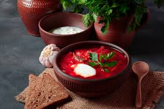

Внешний вид борща

Борщ
Описание: Классический борщ с говядиной и свёклой. Подаётся со сметаной и зеленью.
Ингредиенты
- Говядина на косточке — 500 г
- Свёкла — 2 шт.
- Картофель — 3 шт.
- Морковь — 1 шт.
- Лук репчатый — 1 шт.
- Капуста — 200 г
- Томаты — 2 шт. (или 2 ст. л. томатной пасты)
- Соль, перец, лавровый лист, зелень — по вкусу
Пошаговая инструкция
- Отварите говядину в подсоленной воде 1–1,5 часа до готовности.
- Нарежьте свёклу соломкой, потушите с небольшим количеством бульона и томата 10 мин.
- Добавьте в бульон нарезанный картофель, через 5 мин — морковь и лук.
- Когда овощи почти готовы, добавьте тушёную свёклу и нашинкованную капусту.
- Проварите ещё 5–7 мин, посолите, поперчите, добавьте лавровый лист.
- Дайте настояться под крышкой 10 мин. Подавайте со сметаной и зеленью.